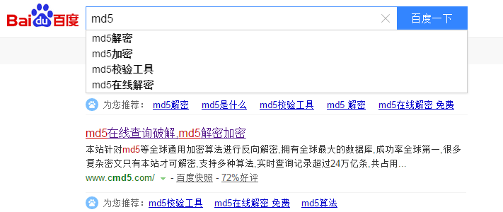
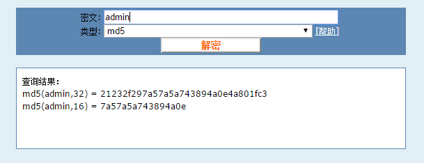
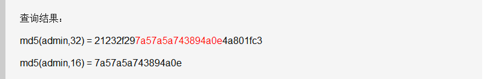
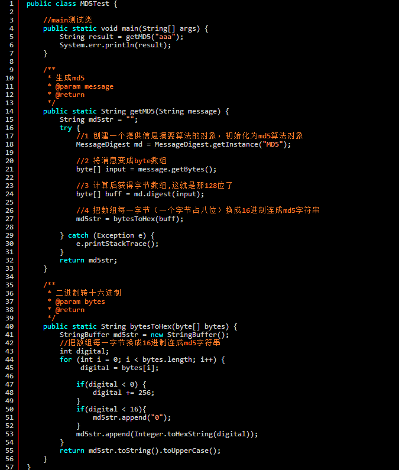

聊一下MD5
1.MD5是什么
message-digest algorithm 5（信息-摘要算法）。经常说的“MD5加密”，就是它→信息-摘要算法。
在下载一下东西时，经常在一些压缩包属性里，看到md5值。而且这个下载页面，很可能会在某一个地方，写了一句，此文件的MD5值为XXXXXXXXX。这有什么作用呢？
白话白话：md5，其实就是一中算法。可以将一个字符串，或文件，或压缩包，执行md5后，就可以生成一个固定长度为128bit的串。这个串，基本上是唯一的。
所以，有人修过压缩包后，就会生成新的串，这时就可以拿网站提供的串和新生成的串对比，如果不同，那就是被人修过过了。
2.加密和摘要，是不一样的
加密后的消息是完整的；具有解密算法，得到原始数据；
摘要得到的消息是不完整的；通过摘要的数据，不能得到原始数据；
所以，当看到很多人说，md5，加密，解密的时候，呵呵一笑就好了。
3.MD5长度
有人说md5,128位，32位，16位，到底md5多长？
md5的长度，默认为128bit，也就是128个0和1的二进制串。
这样表达是很不友好的。
所以将二进制转成了16进制，每4个bit表示一个16进制，所以128/4 = 32 换成16进制表示后，为32位了。
为什么网上还有md5是16位的呢？
网上有很多帖子，md5 32位 16位 加密 区别。
仔细观察admin生成的32位和16位的md5值……
MD5的作用
①一致性检验，最上面那个例子
②数字签名，还是最上面那个例子。只是把md5看出了一个指纹，按了个手印说明独一无二了。
③安全访问认证，这个就是平时系统设计的问题了。
在用户注册时，会将密码进行md5加密，存到数据库中。这样可以防止那些可以看到数据库数据的人，恶意操作了。
md5不能破解吗？
md5是不可逆的，也就是没有对应的算法，从生产的md5值逆向得到原始数据。
但是如果使用暴力破解，那就另说了。
md5是唯一的吗？
md5作为数据库中的主键可行吗？这就涉及到一个问题，md5值是唯一的吗？答案是，不唯一。
也就是一个原始数据，只对应一个md5值；
但是一个md5值，可能对应多个原始数据。
java中生成MD5的值

MD5的详细算法……自己搜吧。
文章转自与http://www.weixuehao.com/archives/474